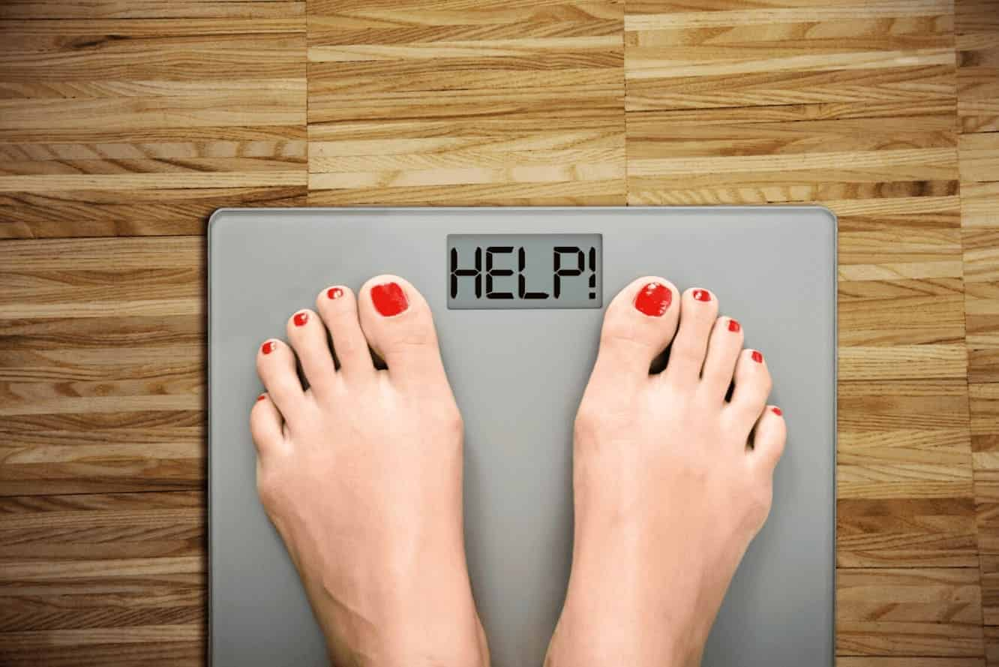

Когда я начинаю диету для похудения я знаю, что будет предсказуемый курс. Предсказуемый, но со степенью неопределенности, потому что каждый человек по-разному реагирует на изменение диеты. Задача диетолога состоит в том, чтобы реагировать на трудности во время потери веса на постоянной основе. Тем не менее, похудение имеет определенные этапы, которые повторяются почти у 90% людей. Стоит знать, что они значат и что произойдет.
Нет никакой универсальной диеты для похудения. Не каждый нуждается в 5 приемах пищи, вы можете есть 4, вы можете и 3. Не каждый найдет высокий запас белка, не каждый хорошо реагирует на углеводы в каждом приеме пищи. После нескольких лет я знаю, что каждому нужен прежде всего, реальный план потери веса.
Способ похудения влияет на образ жизни, генетические условия, привычки или проблемы со здоровьем. Каждый теряет вес по-другому, что не означает, что они не могут поймать некоторые общие элементы.
Я хочу показать вам эти общие элементы. Стадии похудения, которые почти всегда повторяются во время диеты сокращения массы. Посмотрите, чтобы проверить, на какой стадии Вы сейчас находитесь!
В сотрудничестве с диетологом задайте цель потери веса и время, в которое вы ее достигнете. Планируйте свои меню и регулярные тренировки с учетом вашего образа жизни. Помните, что предположения, которые вы принимаете в начале, не являются окончательными и будут меняться с продолжительностью диеты сокращения. Человек не калькулятор, вы не можете предсказать со 100% уверенностью, как тело будет реагировать на изменение привычек в еде.
Ваша масса тела быстро падает. Кончик весов показывает до 1-2 кг меньше в неделю. Это самый распространенный сценарий в начале снижения диеты. Бывает, что первые 2 недели не сбрасывают ни капли жировой ткани. Затем, с использованием умеренно низкоэнергетической диеты, начинается изменение состава тела. Похудение - это не только снижение массы тела, но прежде всего уменьшение массы жира.
Скорость снижения веса замедляется. Вы теряете 0,5-1 кг в неделю в жировой ткани. Продолжительность этого этапа условна. Чем больше ожирения у Вас есть в начале, тем дольше этот этап длится.
Потеря веса прекращается. Это нормальная стадия, которая проходит спонтанно. Важно, чтобы Ваш диетолог предупредил Вас об этом. Плато длится максимум 4 недели. Если после этого времени масса тела не начнет снова снижаться, следует рассмотреть дополнительные меры (например, увеличение физической активности). Самое худшее, что вы можете сделать, это сразу же в начале плато уменьшить калорийность и добавить очень интенсивную физическую активность. Вы не потянете его надолго, и эффект будет хуже, чем ждать, потому что скорость основного метаболизма будет снижаться.
Вес тела снижается примерно на 0,5 кг в неделю. Постоянно, прямо к цели ...
Масса тела остается стабильной с небольшими вариациями (+/- 1 кг). Помните, что масса тела никогда не бывает точкой. Дело не в том, что мечта 57 кг держится, даже если я не знаю, что! Вес тела изменяется в течение дня (даже на 1-1,5 кг) из-за колебаний содержания воды в организме. Вес тела также реагирует на фазу месячного цикла. По этой причине не паникуйте, когда вес будет указывать на килограмм больше. Наблюдайте, поддерживается ли увеличение веса или на следующий день нет никаких следов. Если это длится дольше 2 недель, сделайте анализ состава тела и проверьте, жир ли он.
Постепенное увеличение количества калорий (+ 100-200 ккал / неделя) до калорийной нормокалорической диеты. Это довольно сложный этап, требующий тесного сотрудничества с диетологом. Выход из диеты связан с неотложным наблюдением за собой и реакцией организма. На этом этапе вы, как правило, хорошо осведомлены о функционировании организма, поэтому это не так сложно, как может показаться. Самое главное - не пропустить выход из диеты и вернуться к нормокалорийной диете!
Как можно дольше :). Помните, что состояние пребывания на диете для похудения от состояния отсутствия при сокращении отличается только количеством пищи. Частота приема пищи не меняется, вы не перестаете заботиться о своей высокой питательной ценности, не сдавайтесь. По этой причине очень важно с самого начала вносить реальные решения в долгосрочной перспективе.